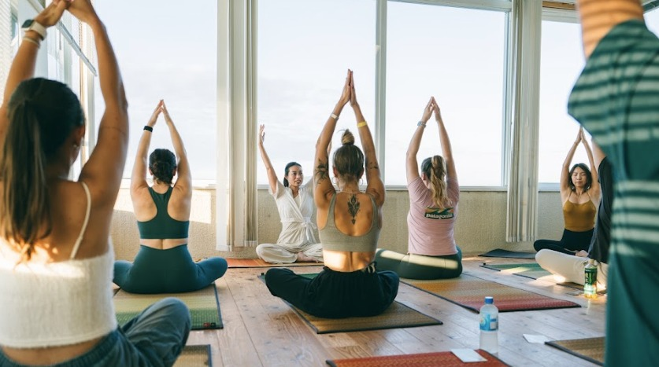
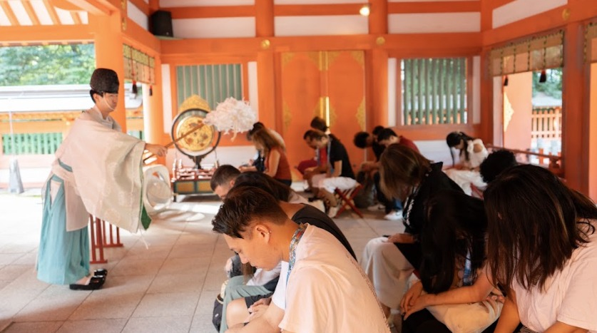
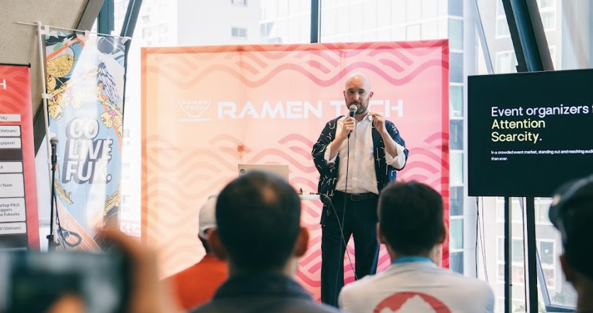
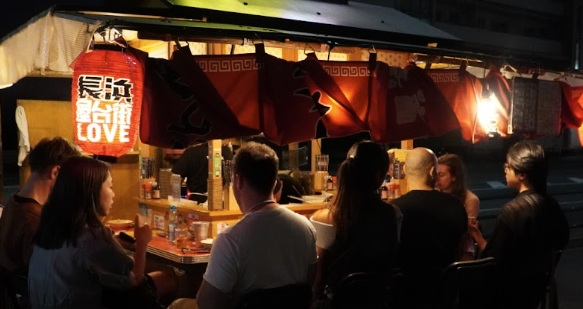
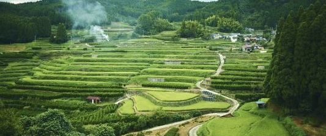
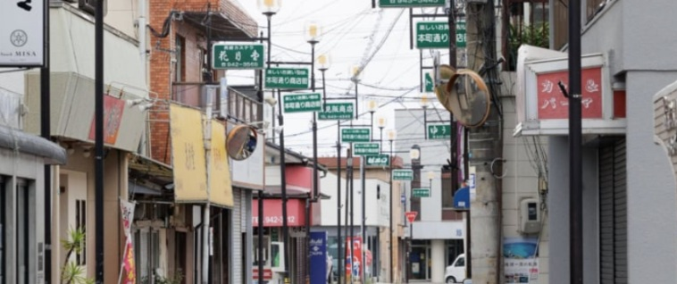
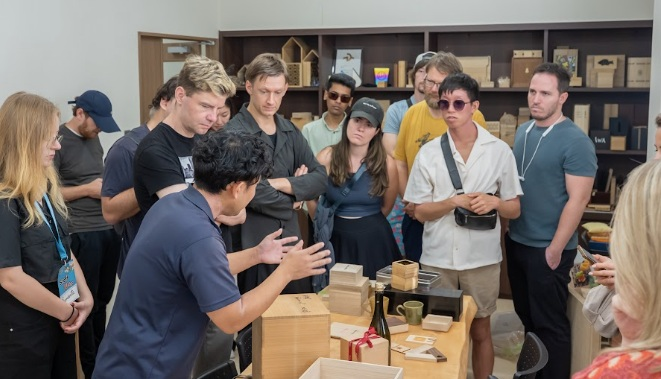

Choose what you need.
Skip what you don't.
Everything about the program lives in five modules. Open one, read it in two minutes, close it. No endless scroll.


Why we build here.
Japan is admired as a nation of health and long life. It is also a nation growing old. As in every advanced economy the birthrate is falling, and with it, year by year, the ability of smaller municipalities to keep their townscapes standing and their traditions alive. People gather in the cities while regional economies thin out at an accelerating pace — and the beauty that took centuries to make, the craft, the culture, the history, slips quietly toward being lost.
Much of regional Japan has never needed a passport. There are communities here that have rarely spoken with a foreigner, living at a distance from how the world now moves and from the age of AI unfolding around it. This program — selected by the Japan Tourism Agency as a national pilot — exists to close that distance: to carry economic and social possibility into the regions, not more tourism.
So we step away from cities strained by overtourism and go where visitors rarely reach, to stand beside the people who love these places and intend to protect them. Builders arrive with everything they carry — technology, ideas, networks, experience — not to consume a destination, but to look at a region's challenges and possibilities through the world's eyes, and to leave behind ideas the towns can actually use.
Wind meets soil.
Rooted in the Japanese concept of Fūdo （風土）, where the wind of global builders meets the soil of regional tradition. Selected as an official pilot by the Japan Tourism Agency, this is a live sandbox: test real-world Web3 payment rails and sit down with local leaders facing real transitions, like matcha farmers riding a global boom. Not a conference add-on. Not tourism. A pilot for the next model of location-independent living.
Jacquie has designed builder programs and community residencies around the world. During your two weeks she runs the Engineering Cafe workshops and shares what global builder communities have learned about working with places like Fukuoka.
Check-in — Fukuoka City
Arrive at Hakata Place, meet your cohort, and roll straight into the Colive Fukuoka opening reception. The October Program starts around you from day one.
Meet your regions — lunch & Destination Pitch
Lunch with the community managers from Yame, Koga and Buzen, then the Destination Pitch: each region makes its case, you start choosing your frontier.
SuzuPay workshop — inside Ikigai Academy
A hands-on workshop within the Ikigai Academy on the stablecoin pilot: how SuzuPay works, how your spending feeds the trial, and what Japan wants to learn from it.
Phase 1 — the startup base
11 nights in Fukuoka City with full access to the October Program: Ikigai Summit, Co-creator's Week, Ramen Tech Startup Conference, daily meetups and yatai stools shared with local founders.
Engineering Cafe — workshops & office hours
Jacquie leads research and design workshops built on her global community experience. Office hours with mentors across Web3, AI and design (Oct 5 is excursion day, workshops run around it).
Phase 2 — your regional frontier
Choose Yame, Koga or Buzen. Three nights, fully subsidized under the JTA pilot. Walk the fields and shopping streets, talk with the people who run them, and shape ideas together. On Oct 13 you share those ideas back with the community.


One base. Three frontiers.
Fukuoka City is home for 11 nights. For the final stretch, Oct 11 to 14, you pick one region and go deep: four days, three nights, stay covered by the pilot.
Fukuoka
A world-class startup ecosystem with a historic soul. Your co-creation hub for 11 nights, with the full October Program as your playground and stablecoin-friendly shops opening across the city.

Yame
One of the world's most respected matcha regions, mid-transformation as global demand booms. Tea farmers, indigo dyers, washi makers and lantern craftsmen still work within a few kilometers of each other. You work from a renovated schoolhouse in the middle of it.

Koga
A mountain-to-sea town 30 minutes from Fukuoka, with retro shopping streets, family-run food factories and a community hub run by people who refuse to let the town fade. The most hands-on track: shopkeepers know you're coming.
Buzen
Framed by Mt. Kubote, a historic center of mountain asceticism. This is the retreat track: kagura ritual dance, forest walks, a riverside tent sauna, and long unhurried conversations with the people who chose this life. Come as you are, leave clearer.
Pay the town in USDC.
Powered by SuzuPay
Shops, cafes and pubs across the four hubs accept QR-code stablecoin payments (USDC / USDT), a multi-region trial on a scale rarely seen in Japan. It runs on SuzuPay, which converts your stablecoins into local spending points, so a matcha latte in Yame or a round at a Koga izakaya settles as easily as anywhere onchain. You don't even need to hold stablecoins to join: register with SuzuPay and your bonus points spend like yen.
Ideas the towns can use.
This is not a hackathon and nobody expects a finished product. The regions asked for something rarer: outside eyes and honest conversation. You research on foot, with interpreters where needed. You sit with farmers, shopkeepers and craftspeople. Then on Oct 13 each group shares the ideas that surfaced, in an open dialogue with the community. What resonates keeps moving after you leave, and the connection you build is yours to keep.

Immerse
Field visits in your region: tea farms, shopping streets, sacred mountains. Guided by community managers who live there.
Listen
Structured dialogue with local leaders and residents. Interpreters on hand, curiosity required.
Ideate
Engineering Cafe workshops (Oct 5–8) with Jacquie and office-hour mentors help you turn observations into ideas worth sharing.
Share — Oct 13
Open idea session with the community in your region. Direct feedback, real relationships, no slideware required.
One package. Everything in.
Builders with something to contribute
Founders, engineers, designers, strategists and creators who want intentional time in regional Japan, engaging directly with local leaders and bringing fresh eyes to communities mid-transition.
Active stablecoin users
You hold and use USDC/USDT. This pilot measures whether Web3 rails can drive regional economies, so priority goes to participants ready to pay onchain on the ground.
Feedback collaborators
Surveys and interviews are part of the deal. Your input directly shapes Japan's infrastructure for global digital nomads.
Already hold a Colive Fukuoka 2026 pass?
We'll stay flexible. An add-on route to join the Builders experience — including the regional stay — is being finalized, and details will be announced here. Mention your pass when you get in touch and we'll sort it out with you.
You leave: regional insight, a network across four cities, and a stake in Japan's borderless future.